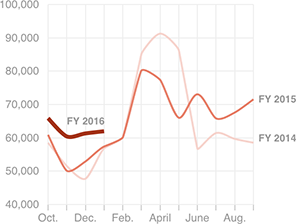

U.S. Citizenship Applications, By Month
Applications so far in FY 2016 are up 12.8 percent over the same period last year.

Notes
FY 2016 figures are available through January. Figures from January 2016 are preliminary.